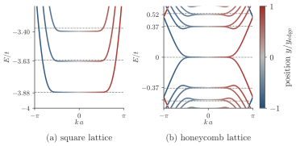
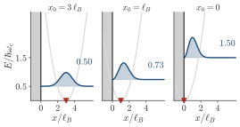

Page 8 of 13 of this session
4.11 Numerical check of the Landau levels and edge states on the lattice
Do a square lattice and a honeycomb lattice in a field give the two ladders of the continuum, and is the oscillator only a property of the Landau gauge? We will now see that a ribbon of each lattice gives its ladder, the parabolic one and the Dirac one, together with the edge branches. Then we build the ladder operators from the kinetic momentum \(\boldsymbol\pi=\mathbf p-\mathbf A\), and they give the oscillator (4.8) in any gauge.
\[t_{ij} \;\longrightarrow\; t_{ij}\, \exp\!\left(i\int_{\mathbf{R}_j}^{\mathbf{R}_i} \mathbf{A}\cdot d\boldsymbol{\ell}\right). \tag{4.4}\]
\[E_n = \hbar\omega_c\left(n+\frac{1}{2}\right), \qquad n=0,1,2,\dots, \tag{4.6}\]
\[E_n = \text{sgn}(n)\, v_F\sqrt{2\hbar B|n|}, \qquad n = 0,\pm1,\pm2,\dots, \tag{4.7}\]
The first equation is the Peierls substitution of Section 4.7, which puts the field on a lattice as a phase of each hopping \(t_{ij}\) between the sites \(\mathbf R_j\) and \(\mathbf R_i\). The other two are the Landau levels of the continuum, for Schrödinger electrons with the cyclotron frequency \(\omega_c=B/m\), from Section 4.9, and for Dirac electrons with the velocity \(v_F\), from Section 4.10.
Let us say how the continuum results of Sections 4.9 and 4.10 are connected to tight-binding lattices. This is where the edge states of Section 4.5 first appear together with the bulk Landau levels in a single calculation. We take a ribbon of a square lattice with a finite width. The band bottom of this lattice is parabolic, so it plays the role of the Schrödinger 2DEG. We add a uniform orbital field with the Peierls substitution (4.4). We put the chemical potential near the bottom of the band, so that the lattice model describes a dilute electron gas that is almost free.
The band structure that we obtain shows what the continuum calculation predicted. There is a set of flat bulk bands, the Landau levels, together with dispersive edge bands. One branch is localized at each edge of the ribbon, and the two propagate in opposite directions, which is the chiral pair of Section 4.5.
Then we repeat the same construction on an armchair ribbon of the honeycomb lattice, where the low-energy physics is a real Dirac equation at the \(K\) and \(K'\) points. We obtain the \(\sqrt{B}\) Landau levels of Section 4.10, together with their own chiral edge states. The notebook box of Section 4.10 asks you to build both ribbons yourself, for example with the width N = 30 of its Core cells. The two ribbons computed with pyqula are in Schematic 4.9.


g3_ribbons_in_field.py
In a ribbon, a Landau level bends up near a wall. The guiding center of the state is \(x_0=\hbar k_y/B\). Why does the energy grow when \(x_0\) comes close to the wall?
Show the answers
- A. ✗ False
This is false. The flux per plaquette is the same on the last row as in the bulk, since we use the same bond phases. The levels far from the wall stay flat at the same energies.
- B. ✓ True
This is true. A state with the guiding center at the wall has part of its wavefunction removed. A squeezed wavefunction has a larger kinetic energy, and this is what gives the dispersive edge branches.

The lowest level of the oscillator of one \(k_y\) with a hard wall at \(x=0\), with the energy in units of \(\hbar\omega_c\) and the position in units of \(\ell_B\). The energy grows from \(0.50\) to \(0.73\) and to \(1.50\) as the center \(x_0\) of the well goes from \(3\,\ell_B\) to \(\ell_B\) and to the wall. - C. ✗ False
This is false. The flat levels far from the wall stay at \(\hbar\omega_c(n+\tfrac12)\) in a ribbon that is wider than a few \(\ell_B\). Only the states within about \(\ell_B\) of the wall move.
Each picture shows the bands of a ribbon against the momentum \(k\) along it. The color is the position across the ribbon. Which ribbon has Dirac electrons in a magnetic field?
Show the answers
- A. ✗ False
This is false. The flat levels are at \(-3.88\,t\), \(-3.63\,t\) and \(-3.40\,t\), spaced by about \(0.24\,t\), close to \(\hbar\omega_c=0.25\,t\), and the lowest one is half a spacing above the bottom of the band at \(-4t\). This is the parabolic ladder \(\hbar\omega_c(n+\tfrac12)\) of a square lattice in a field.
- B. ✓ True
This is true. There is a flat level at zero energy, and the next ones are at \(\pm0.37\,t\) and \(\pm0.52\,t\), with the ratio \(1.40\), close to \(\sqrt2\) and far from \(2\). These are the levels \(0\) and \(\pm\sqrt{|n|}\,E_1\) of Dirac electrons, here an armchair ribbon of the honeycomb lattice with the flux \(0.005\) per unit area.
- C. ✗ False
This is false. No band is flat. The lowest band above zero energy goes from \(0.03\,t\) at \(k=0\) to \(0.48\,t\) at \(ka=1\), which is the Dirac cone of the same honeycomb ribbon with no field.
4.12 Ladder operators and the many-body Landau Hamiltonian
In Sections 4.9 and 4.10 we found the structure of a harmonic oscillator by working in a specific gauge. We can show this structure in a way that does not depend on the gauge, if we define the ladder operators directly from the kinetic momentum,
\[a = \frac{\ell_B}{\sqrt{2}\hbar}(\pi_x + i\pi_y), \qquad a^\dagger = \frac{\ell_B}{\sqrt{2}\hbar}(\pi_x-i\pi_y),\]
which satisfy the canonical bosonic commutation relation \([a,a^\dagger]=1\). For this we only use \([\pi_x,\pi_y]=i\hbar^2/\ell_B^2\), which depends on the field and not on the gauge. In terms of these operators the full quantum Hall Hamiltonian for a Schrödinger electron becomes the harmonic oscillator.
For a Schrödinger electron in a uniform field, in any gauge,
\[H = \hbar\omega_c\left(a^\dagger a + \frac{1}{2}\right), \tag{4.8}\]
with \(a\) and \(a^\dagger\) built from the kinetic momentum \(\boldsymbol\pi=\mathbf p-\mathbf A\), where \(\mathbf p\) is the canonical momentum. It uses only the commutator \([\pi_x,\pi_y]=i\hbar^2/\ell_B^2\), which the field fixes and the gauge does not change.
The steps From the Hamiltonian in a field to the oscillator (4.8)
We start from \(H=(\pi_x^2+\pi_y^2)/2m\) and from the commutator \([\pi_x,\pi_y]=i\hbar^2/\ell_B^2\), which the problem below shows in two gauges. The simplest step is the commutator of the ladder operators,
\[[a,a^\dagger]=\frac{\ell_B^2}{2\hbar^2}\,[\pi_x+i\pi_y,\pi_x-i\pi_y]=\frac{\ell_B^2}{2\hbar^2}\big(-2i\,[\pi_x,\pi_y]\big)=1.\]
Then we multiply the two operators in the other order,
\[a^\dagger a=\frac{\ell_B^2}{2\hbar^2}(\pi_x-i\pi_y)(\pi_x+i\pi_y)=\frac{\ell_B^2}{2\hbar^2}\big(\pi_x^2+\pi_y^2+i\,[\pi_x,\pi_y]\big)=\frac{\ell_B^2}{2\hbar^2}\big(\pi_x^2+\pi_y^2\big)-\frac12,\]
meaning that \(\pi_x^2+\pi_y^2=(2\hbar^2/\ell_B^2)(a^\dagger a+\tfrac12)\). The last step is the prefactor,
\[H=\frac{\hbar^2}{m\ell_B^2}\Big(a^\dagger a+\frac12\Big)=\hbar\,\frac{B}{m}\Big(a^\dagger a+\frac12\Big)=\hbar\omega_c\Big(a^\dagger a+\frac12\Big),\]
with \(\ell_B^2=\hbar/B\) and \(\omega_c=B/m\). Since \([a,a^\dagger]=1\), the eigenvalues of \(a^\dagger a\) are \(n=0,1,2,\dots\), as for any oscillator, and we get (4.6) without any choice of gauge.
Equation (4.8) is clearly a harmonic oscillator, with eigenvalues that give (4.6) directly, without any reference to a gauge. This is the clearest way to see that the statement “Landau levels behave like a harmonic oscillator” is not an artifact of the Landau gauge. It is a structural property of any electron in a uniform field.
Why does the form (4.8), \(H=\hbar\omega_c(a^\dagger a+\tfrac12)\), not depend on the gauge?
\[H = \hbar\omega_c\left(a^\dagger a + \frac{1}{2}\right), \tag{4.8}\]
Show the answers
- A. ✗ False
This is false. The symmetric gauge \(\mathbf{A}=(-By,Bx,0)/2\) is equally allowed, and we use it in the section on the lowest Landau level. It gives the same oscillator.
- B. ✗ False
This is false. In the symmetric gauge \(H\) does not commute with \(p_y\), since \(A_x=-By/2\) depends on \(y\). The form \(\hbar\omega_c(a^\dagger a+\tfrac12)\) holds there too.
- C. ✓ True
This is true. The ladder operators are built from the kinetic momentum \(\boldsymbol{\pi}\). Their commutator is fixed by \(\mathbf{B}\), so the oscillator structure is the same in every gauge.
With the charge \(+e\) and \(e=1\), the kinetic momentum is \(\boldsymbol\pi=\mathbf p-\mathbf A\), where \(\mathbf p=-i\hbar\nabla\) is the canonical momentum. Show that \([\pi_x,\pi_y]=i\hbar B\) for the Landau gauge \(\mathbf A=(0,Bx,0)\) and for the symmetric gauge \(\mathbf A=\tfrac B2(-y,x,0)\).
Solution
We use \([x,p_x]=[y,p_y]=i\hbar\), and that \(x\) commutes with \(p_y\) and \(y\) with \(p_x\). In the Landau gauge \(\pi_x=p_x\) and \(\pi_y=p_y-Bx\), so
\[[\pi_x,\pi_y]=-B\,[p_x,x]=i\hbar B.\]
In the symmetric gauge \(\pi_x=p_x+By/2\) and \(\pi_y=p_y-Bx/2\), so
\[[\pi_x,\pi_y]=-\frac B2\,[p_x,x]+\frac B2\,[y,p_y]=\frac{i\hbar B}{2}+\frac{i\hbar B}{2}=i\hbar B.\]
For any \(\mathbf A\) the same steps give \([\pi_x,\pi_y]=i\hbar(\partial_xA_y-\partial_yA_x)=i\hbar B\), which is the field and not the gauge. With \(\ell_B^2=\hbar/B\) this is \(i\hbar^2/\ell_B^2\), the commutator that gives \([a,a^\dagger]=1\) and the oscillator (4.8). So a calculation can take the Landau gauge, which keeps \(k_y\) for a band structure, or the symmetric gauge, which keeps the rotation, and the Landau levels are the same.
Try it. Run the cell with W = 40 and B = 0.02. The color gives the position across the ribbon. In the gap between the first two flat levels you should find one branch from each edge. The two have opposite slopes, as in the spectrum above.
- In Section 4.19 the notebook follows the same edge branch while the magnetic field is replaced by the Haldane coupling.
- In Section 5.14 a ribbon of a chiral p-wave superconductor has edge branches of the same kind, and in Section 6.16 a ribbon of a topological magnet has chiral magnon edge modes.
- In Section 4.13 the ladder operators of (4.8) give the wavefunctions of the lowest Landau level.